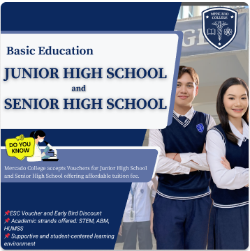

Basic Education
Program
What is K to 12?
The K to 12 Program covers Kindergarten and twelve (12) years of basic education (six years of primary education, four years of Junior High School, and two years of Senior High School [SHS]). This program provides sufficient time for mastery of concepts and skills, develops lifelong learners, and prepares graduates for tertiary education, middle-level skills development, employment, and entrepreneurship.
Gearing Up for the Future (Senior High School)
Senior High School is two (2) years of specialized upper secondary education where students may choose a specialization based on aptitude, interests, and school capacity. The chosen career track defines the subjects a student will take in Grades 11 and 12. Senior High School subjects fall under either the Core Curriculum or specific Tracks.
Core Curriculum
There are seven learning areas under the Core Curriculum: Languages, Literature, Communication, Mathematics, Philosophy, Natural Sciences, and Social Sciences. Current content from some General Education subjects are embedded in the SHS curriculum.
Tracks
Each student in Senior High School can choose among three tracks: Academic; Technical-Vocational-Livelihood; and Sports and Arts.
The Academic Track includes four strands: Accountancy, Business and Management (ABM); Humanities and Social Sciences (HUMSS); Science, Technology, Engineering, and Mathematics (STEM); and General Academic Strand (GAS).
Students undergo immersion programs, which may include earn-while-you-learn opportunities, to provide relevant exposure and actual experience in their chosen track.
Benefits of the K to 12 Basic Education Program
-
It will produce globally competitive graduates
The K to 12 program aligns with international standards such as the Washington Accord and the Bologna Accord, increasing graduates' global competitiveness.
-
Students will learn more easily
The curriculum is decongested and focused, allowing better comprehension of core subjects. Learners from Grade 3 and below are taught in their mother tongue.
-
Students will be free to pursue their passion
Students may choose electives and specializations aligned with their interests, nurturing their skills and talents.
-
There will be savings on college tuition fees
Grades 11 and 12 function as a tuition-free two-year college education in public schools, reducing overall college costs.
-
It will reduce unemployment rate and improve the economy
Graduates gain employable skills and entrepreneurial training, helping reduce unemployment and strengthen the economy. The K to 12 Basic Education Program aims to improve both graduate quality and the overall quality of life in the country.
